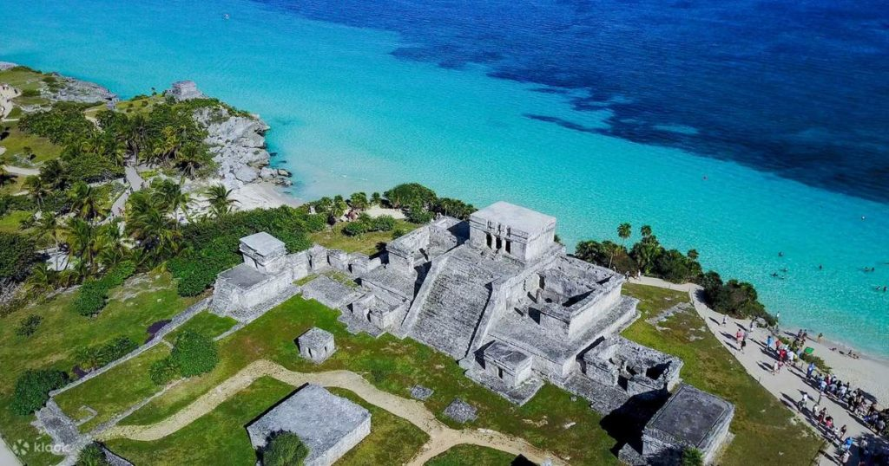
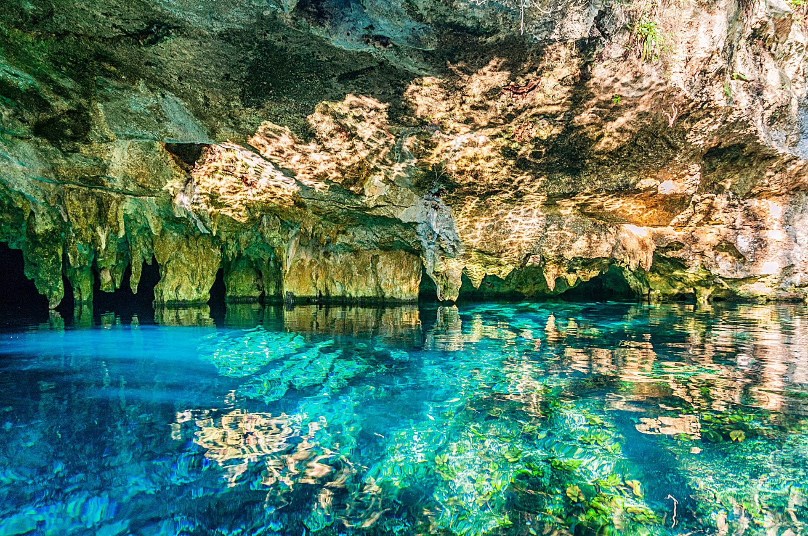
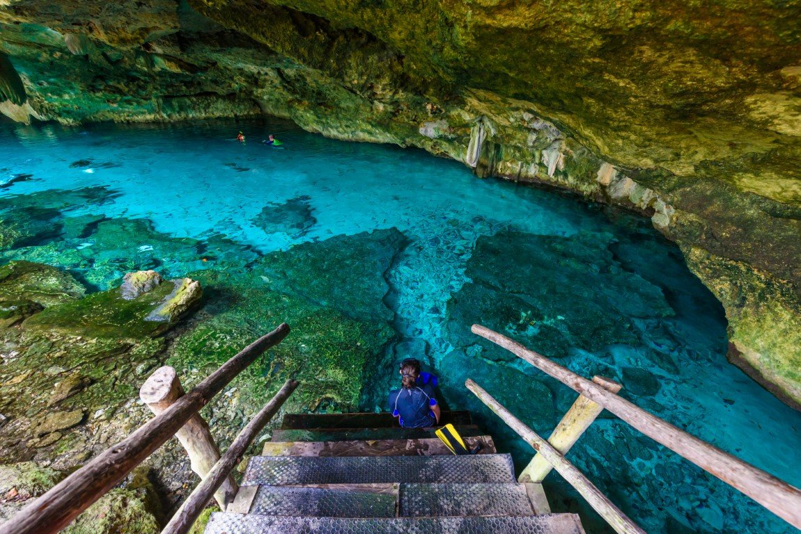
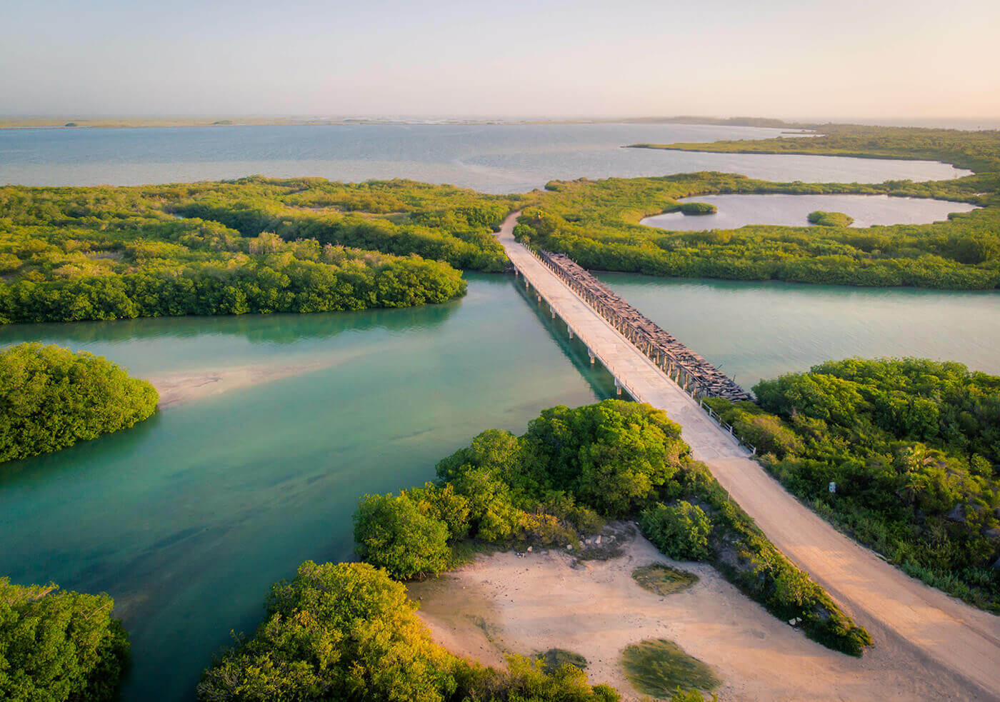
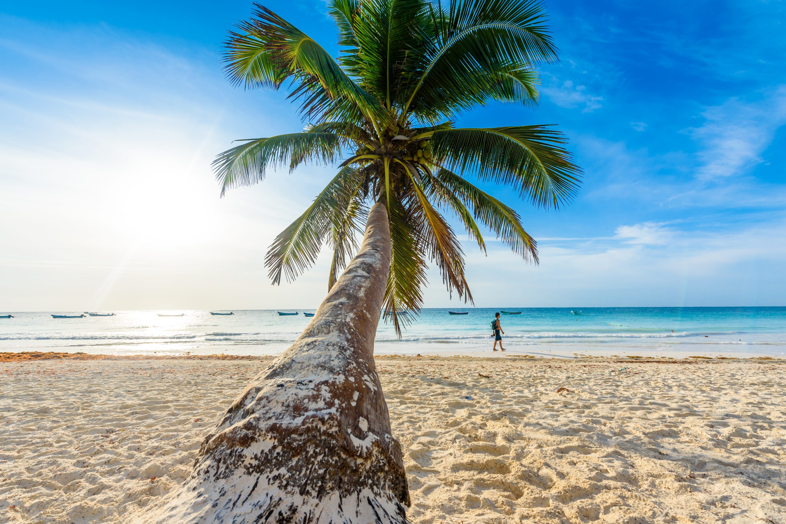

Misticismo maya a orillas del Caribe
Tulum es la joya más mística del Caribe Mexicano. Aquí las ruinas mayas se asoman al mar turquesa desde acantilados blancos, los cenotes esconden mundos subterráneos de estalactitas y aguas cristalinas, y la selva se mezcla con hoteles boutique de lujo eco-chic. Es el destino donde la historia milenaria, la espiritualidad y el glamour coexisten en perfecta armonía.

El único sitio maya construido frente al Caribe; ruinas sobre acantilados de ensueño.

El cenote más visitado de la zona, perfecto para snorkel y fotografía.

Sistema de cuevas subacuáticas de 60 km — una de las maravillas del mundo.

Patrimonio de la Humanidad con ecosistemas vírgenes, flamencos y manatíes.

Considerada una de las playas más bellas del mundo por su turquesa perfecto.